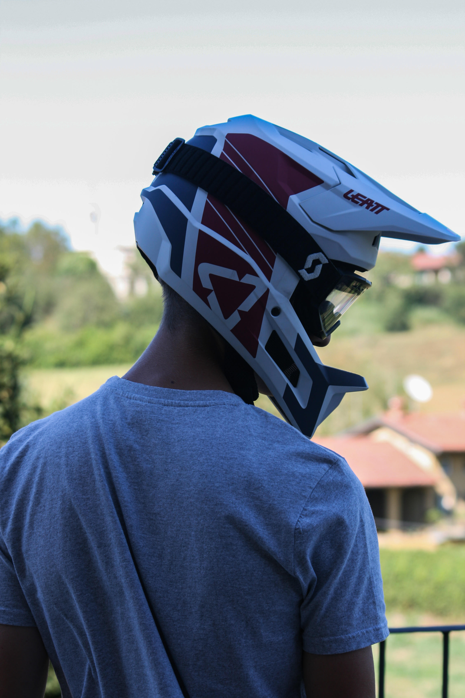
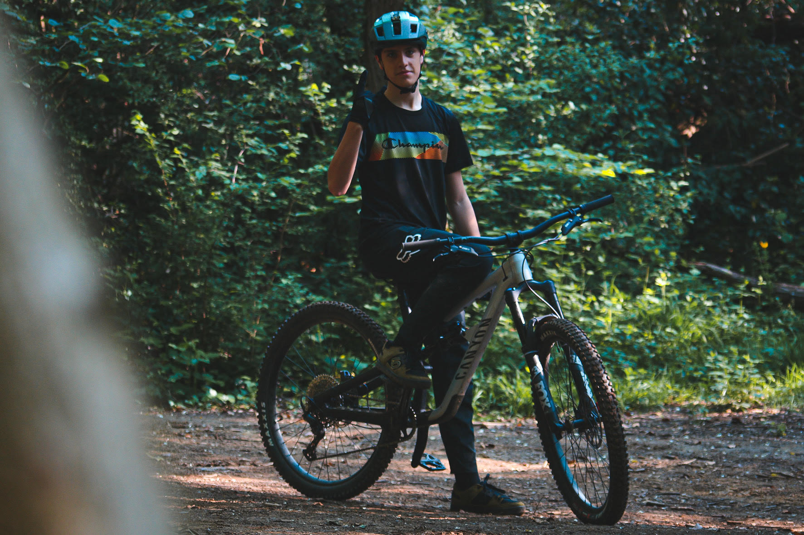

Benvenuti nel mio Portfolio
Mi chiamo Fabio Telloli, sono nato a Torino nel 2006,
vivo a Chieri, studio informatica presso
l’istituto salesiano Edoardo Agnelli.

Mi piace molto andare in bici facendo
enduro nella collina di Torino,
inoltre spesso gioco a basket e vado in palestra.

Sono appassionato di fotografia e quando posso scatto
qualche foto in giro per le città.